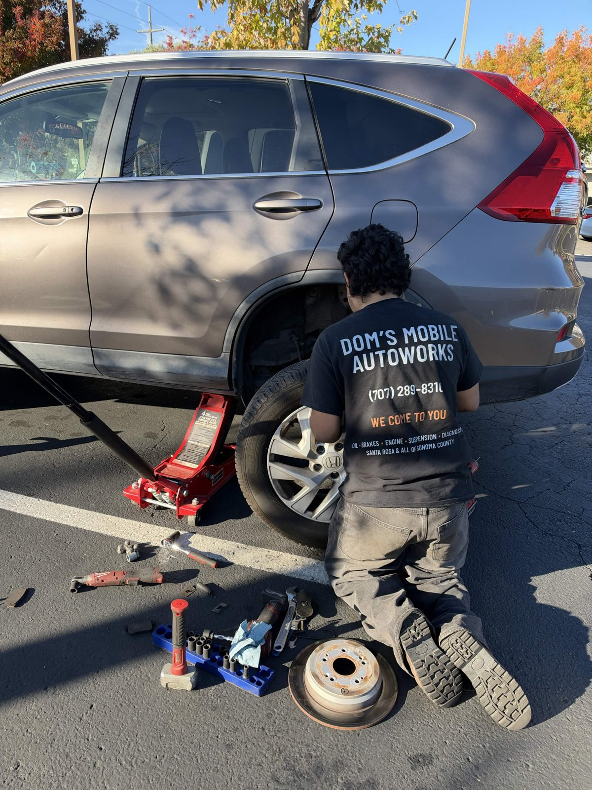

MOBILE SUSPENSION REPAIRS · SANTA ROSA
Clunks or a rough ride?
Let’s take a look.
I’m Dom. I provide mobile suspension and steering diagnosis and many shock, strut and control arm repairs in Santa Rosa and throughout Sonoma County. Call or text to discuss your vehicle and the work needed.
(707) 289-8310 · Daily, 10 AM–7:30 PM.
Visits by appointment.

Suspension noise needs a diagnosis
A clunk, rattle or rough ride does not identify one specific failed part. Tell me when the symptom happens: over bumps, while turning, or during braking. I’ll inspect the relevant components and discuss the findings and repair options with you.
Can you replace shocks or struts at my location?
Many suspension jobs can be done at a home or workplace with suitable access and a safe, level work area. Some repairs need shop equipment or additional services. I’ll confirm what I can do on-site for your specific vehicle before scheduling. Let me know if you have already purchased parts.
What do you need to quote the job?
Text the year, make, model and your city to (707) 289-8310. If a repair has already been diagnosed, include the requested work, whether it is front or rear, and whether you have parts. If the cause is unknown, describe the symptom so we can discuss diagnosis first.
Santa Rosa and Sonoma County.
Mobile service is available in Santa Rosa, Rohnert Park, Cotati, Windsor, Sebastopol, Petaluma and surrounding Sonoma County communities. Text your location to confirm travel and availability.
Call or text (707) 289-8310 to talk directly with Dom about the vehicle, the work and the cost.